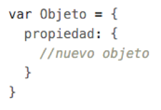
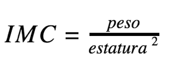

codificar

La creación de algoritmos, desde simples hasta complejos, involucra gran cantidad de información a ser manipulada y, en ocasiones, el uso de sólo variables puede tornarse perjudicial en el desarrollo.
La programación orientada a objetos es un paradigma de desarrollo de software que permite crear estructuras de datos fácilmente entendibles y reutilizables, de tal manera que el código se torna más organizado y puedes crear grandes cantidades de código que manipulen información sin ningún problema.
En JavaScript es muy común el uso de objetos y funciones, el uso de operaciones matemáticas asistidas por objetos predefinidos en el lenguaje y el objeto Math. De manera similar, el objeto Date permite realizar importantes operaciones con las fechas, años, meses, días, minutos y segundos. Como desarrollador web, debes conocer muy bien cada una de estas herramientas que el propio lenguaje tiene para ti, ya que te pueden hacerte la vida mucho más fácil cuando llegues a necesitarlos.
Para realizar este ejercicio, supongamos que: una clínica toma los datos de sus pacientes por medio de una página web. Sin embargo, la página hasta el momento no posee ningún tipo de acciones que interactúen con el usuario. Te solicitan que, con tus conocimientos en JavaScript, asocies a un objeto los datos que se muestran en la pantalla y que, por medio de un método del mismo, se muestren en consola todos los datos correspondientes al paciente, incluyendo algunos cálculos adicionales.
Contenido
Instrucciones
- Descarga el codBase.zip que continene la página web.
- En el archivo index.js hay un evento definido que se dispara cuando se hace click en el botón perfil de la barra de navegación. Sin embargo, antes de crear código al interior de este evento, debes crear un objeto Persona con todos los datos del paciente como atributos.
- Los datos nombre, ciudad y entidad de salud deben ser cadenas de caracteres.
- Los datos peso y estatura deben ser numéricos.
- La fecha de nacimiento debe ser un objeto de tipo Date.
- La última consulta debe ser un objeto anidado. Esto quiere decir que, al definir esta propiedad en el objeto Persona, indicas el nombre y la haces igual a un nuevo objeto.
Ejemplo:
Las dos propiedades del objeto anidado son: la fecha de la última consulta de tipo Date y las anotaciones como un vector en el que se almacena cada anotación en una posición distinta. - La historia clínica debe ser una matriz que almacene el evento con su respectiva fecha, en cadenas de caracteres.
- Crea un método al objeto Persona que calcule y retorne su edad aproximada. Esto lo puedes lograr restando los años de la fecha actual y la fecha de nacimiento.
- Crea un método al objeto Persona que calcule y retorne, en forma de cadena de caracteres, el Índice de Masa Corporal que se calcula con la siguiente fórmula:
 - Crea un método del objeto Persona que imprima todos los datos de la persona en consola, incluyendo su edad y su IMC.
- Dentro del bloque de código del evento click en el botón perfil, invoca el método para imprimir los datos de la persona.
Buenas Prácticas
- El uso de objetos en JavaScript es muy útil, no sólo en el manejo ordenado de la información, sino que también contribuye al control de la ejecución del código. Recuerda que al ser un lenguaje asincrónico, es difícil saber qué cosas se ejecutan en qué momento, sin embargo, los objetos te dan más control en estas situaciones.

Intenta completar la actividad por tu cuenta pero ten presente que si se te dificulta, puedes contactar a un tutor a través del chat de ayuda.
Aprender estos conceptos y saber cómo llevarlos a la práctica, te permitirá tener éxito en tu carrera como desarrollador. Entonces, esfuérzate al máximo y descarga la solución sólo si necesitas verificar tu trabajo o asegurarte de que estás en el camino correcto.
Recuerda, esta actividad te debería tomar aproximadamente 40 minutos en completar.